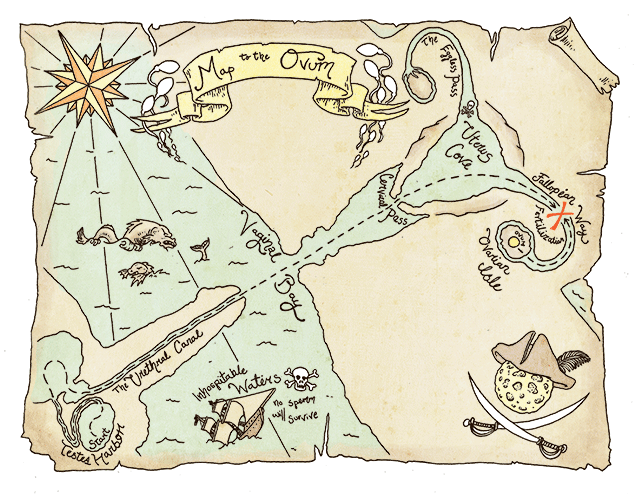
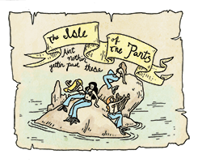
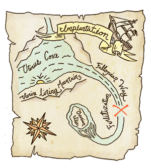
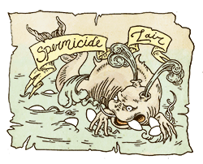
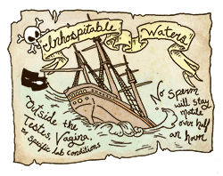
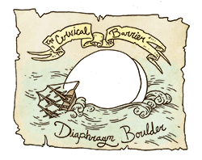
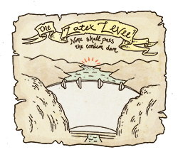

Human Reproduction: A Seafarer's Guide
by

If how pregnancy happens seems simple, know that it's not. It's not a big mystery at this point, and it's something we can understand, but it's way more complex than two different kinds of cells happening to be in the same place at the same time and -- VOILA! -- baby. How to get to a pregnancy is actually a pretty complicated map, and one with many obstacles.
Chances are good that if you are in your teens, twenties or even beyond them, you've only had it explained in the most simple, and probably incomplete or incorrect, ways. Just like with anything complicated, the more anyone simplifies it, the less accurate our understanding can be. There are giant textbooks just about the process of human reproduction, so even an article like this one, where we go into depth and detail, is still a simplification. But our aim is that even in paring the process down some, you'll walk away understanding how pregnancy happens -- and how it doesn't -- a lot better than you do now.
Some of our users voice concepts of reproduction that are incomplete, exaggerated or straight-up fantasy. Ideas like sperm that leap from place to place like fleas (were that true, I would so have a sperm circus in my office), a teaspoon of semen that possesses the magic ability to soak through more layers of fabric than a glass of water, or methods of contraception we know are practically foolproof when used properly being utterly useless aren't even remotely based in facts, but in fear, fantasy or just truly poor understandings of how this all really works. We've experienced people terrified about becoming pregnant when they have not been part of anything that can cause a pregnancy; others who are taking big pregnancy risks without any awareness of them. If you're worried or freaking out about pregnancy often, especially when you're not even doing the things that can pose real risks of pregnancy, or you are doing those things, but are doing so using more than one method -- or even just one -- of highly effective contraception consistently and correctly, here's hoping this explanation and some visuals of what really happens -- and what really can't -- can help you to chill out.
The Birds and The Bees, for Real (in which there are neither birds nor bees)
What you've probably heard about most when it comes to how pregnancy happens are gametes: a kind of cell that can fuse with another kind of gamete to potentially create a pregnancy in organisms, like people, that reproduce that way. (Curious about some cool ways other organisms can reproduce? Check this out.) Sperm cells are one kind of gamete; ovum (egg) cells are another. When those two kinds of cells are able to come into contact with each other is when a pregnancy can potentially result. If that sounds awfully simple, that's because it is. Too simple. There's a whole lot more than that which needs to happen to create a pregnancy.

A lot of people have been told about reproduction with the emphasis on sperm cells, which might be some of why some folks have imagined them as playing a way bigger part, all by themselves, than they do. So, I want to flip the script here and start, instead, with ova, or egg cells.
In most people of reproductive age (in or past puberty, but before menopause) who have a vagina and a uterus, their ovaries -- tiny sacs just outside the ends of the fallopian tubes -- contain ovarian follicles, which are immature ovum. In people the age of our typical readers, usually millions of them.
During each fertility or menstrual cycle, one of those usually develops, is released by the ovaries and pulled into one of the fallopian tubes. The link at the start of this paragraph, paired with this one, can tell you more about the fertility cycle, and about what has to happen for that ovum to develop and get released in the first place. If there's no ovum, or won't be one within a few days, pregnancy can't happen.
When an egg does get released, that cell starts slowly moving through the fallopian tube (and it is always slowly and gradually moving: it's not just sitting around waiting for sperm cells to call and ask it out). When there's an ovum in the fallopian tube, or one is soon to head that way, a couple other things are also usually going on. For one, cervical mucus, the fluid around the cervix, tends to become very watery and stretchy. The os, the opening of the cervix, gets softer and more open. For sperm cells to even have a chance of getting to the egg, both of these other things have to be happening. And both of these things, as well as the available ovum, are a limited time offer: all of this usually only happens for a few days in each cycle.
While all of this is happening, should someone with a penis ejaculate ("come") inside the vaginal opening, or very directly unto the vulva -- things that can't happen when people are dressed, or aren't likely to with indirect transfer, like with semen from penis to hand to vulva -- then we've got some of the other things needed for a potential pregnancy: semen and sperm cells.
Semen and sperm are not the same thing. Semen (seminal fluid or plasma) is a fluid from the seminal vesicles, the prostate gland, cowper's gland, and the bulbourethral glands, which all comes through the urethra and out of the opening of the penis during ejaculation. Ejaculation most typically happens right around or nanoseconds after orgasm, but not always: sometimes people ejaculate without any orgasm.
Semen almost always contains sperm cells but it is not, itself, just made up of just those cells. Less than 5% of semen is sperm cells. The rest is a whole bunch of things, all essential for sperm to do anything: proteins, enzymes, acids, and a good deal of fructose (a sugar), a needed energy source for sperm cells. The fluid of semen is how sperm cells can move out of the penis, and through the vagina. Just like a fish can't swim out of water, same goes for sperm without the fluid they're ejaculated with. But it does more than that. It supplies nutrients and energy those cells need to be able to do anything at all, and it also neutralizes things that create problems for sperm like traces of urine and the vaginal environment. The push an ejaculation gives that fluid also matters.
A person with testicles ("balls") usually produces millions of sperm every day. They're microscopically small: we can't see them without a powerful microscope. When ejaculation occurs -- and this is something a person with a penis knows has happened, not something they can't know or have to guess at -- there's usually around a teaspoon or so of that semen, which can contain hundreds of millions of sperm. Sperm cells are very fragile and super-duper sensitive. They are not resilient to things like being moved around from place to place -- like from penis to hand, then hand to vulva -- to changes in temperature, or to environments besides the testes and special lab conditions designed to protect them.
So, let's say we have an available ovum, and all the other conditions on that person's body to make pregnancy even possible, and someone with a penis has also ejaculated inside the vagina or very nearby (and by nearby, I mean on the genitals, not on someone's thighs, chest or a few feet away). For the next step to happen after that, sperm cells need to get through the vaginal canal, and then into the cervix. But they often can't do one or both of those things.
During some parts of the fertility cycle, for a person with a vagina and uterus, cervical mucus is too thick and pasty for those cells to be motile (to move), and the opening to the cervix isn't open enough for them to get inside of it. Sometimes, sperm cells have to wait within the vagina or other parts of the reproductive system because they got there too soon: an egg, and the other conditions needed, weren't there for them yet. Sperm cells can potentially stay within the vaginal environment for a few days: they can be the ones waiting for the phone to ring, as it were. Other times, there's just not enough semen or viable sperm cells in that semen for these next steps. In a lot of ways the vagina, cervix and uterus aren't friendly to sperm cells: that system even "attacks" some sperm cells to try and counteract them similar to the way our bodies try to counteract unhealthy bacteria or other potentially harmful visitors.
Even in perfect conditions, less than a thousand sperm cells -- of those initial millions! -- will make it to the fallopian tubes, and only a few dozen of the sperm cells may wind up reaching the outer membrane of the egg cell, if any do. That's one reason the body produces so many of them.
When they can get through the vagina, and through the cervical opening, what sperm cells remain will go both ways they possibly can, some to one fallopian tube, some to the other. Once in the fallopian tubes, sperm cells are helped by contractions of the uterus to keep moving, and also by the cilia, super-tiny organelles (a specialized subunit within a cell) in the fallopian tube that push the sperm cells towards the egg cell; but others get kind of tangled up and stuck in the cilia instead. Chemicals inside the reproductive system also help out, changing the sperm cells to give them more energy.
Those that went to the tube with a live egg surround it -- at this point, there are usually less than just fifty or so of them left -- and try to enter the sac. If the ovum is healthy, sperm will push into the protective layers around it, and into sperm receptors that are part of the membrane around the egg cell. Then it's just a matter of which one of the few remaining sperm cells is able to then get to the egg first and fertilize it, with the egg also taking part by pulling the sperm cell inside. When the egg does that, and secretes some special enzymes, that locks out any of the other sperm cells left trying to get in.
And that's when we've got what's called fertilization of the egg. But we still don't have a pregnancy yet.
If and when the process continues, about a day or so after fertilization the egg cell and the sperm cell together become something new, a zygote. It starts to divide into many cells, staying in the fallopian tubes keeping busy with that for a few more days. That zygote then starts moving towards the uterus, dividing more all the while. It changes some more, becoming a hollow ball of cells called a blastocyst, and that is what may -- or may not -- implant in the uterine wall, attaching into the endometrium (the uterine lining, the same lining that shed during a period) and then become an embryo. Conception or implantation are the terms used most often for this stage of the process.
Many times, without any interference from anyone, fertilized eggs don't divide or implant and a pregnancy does not occur: it's understood right now that as many as 50% of implantations do not complete (and this isn't something anyone is ever likely to notice or know happened to them, since when that happens, menstrual periods will tend to happen as usual, and a person doesn't feel anything with just a fertilization).
But if and when all of that up there does happen, and that blastocyst does implant itself in the uterus? That's when we've got ourselves a pregnancy.
All in all, the process from the moment ejaculate enters the vagina to implantation, what is medically recognized as a pregnancy, tends to take anywhere between around five days to two weeks. This is one of the reasons emergency contraception can work even though it's taken after intercourse, and also why, if you're freaking about feeling all these pregnancy symptoms just a couple days after a possible risk, you can know that whatever you're feeling is not from a pregnancy, because pregnancy doesn't happen that fast.
From implantation on, some people will choose to continue a pregnancy, others will choose to terminate it with an abortion procedure. A pregnancy may also end on its own any time before delivery (birth) due to miscarriage or other complications. Should a person choose to continue a pregnancy, and should it run its full course, all of this is just the beginning of an equally complex and evolving process of around forty weeks of pregnancy and fetal development until delivery, or birth, which is its own complex process. Phew!
You've Asked...
On what days can someone get pregnant? On potentially any day there is direct vaginal contact with sperm, and most typically, vaginal intercourse. There are times in a fertility cycle when a person is MOST likely to become pregnant, and times when a person is least likely and even not at all likely to become pregnant. But someone with the capacity to become pregnant can technically become pregnant any time they have the kind of contact with a penis or ejaculate that can create a pregnancy. Fertility cycles differ a lot from person to person, so there is no one safe, or safer, or one fertile, nor infertile, time for everyone. However, as we'll address in a sec, using reliable methods of contraception correctly and consistently makes pregnancy unlikely on any day they are used.
I've heard the chance of becoming pregnant is the same as the chances of winning the lottery. Is that true? A person with a uterus, engaging in or experiencing the kinds of sex or contact that present a risk of pregnancy, who does not use any form of birth control has an 80 - 90% chance of becoming pregnant within one year. The higher end of that are those between their late teens and early twenties; both fertility rates and sexual activity rates -- and not using contraception consistently or properly -- tend to be highest in that age group. The majority of unintended pregnancies also tend to occur within the first six months of a person engaging in sexual intercourse.
The unintended pregnancy rate among teens who are sexually active is more than twice the national figure for all sexually active people of reproductive age. The rate among sexually active 18–19-year-olds (162 per 1,000) is more than double the national figure. There are substantially greater numbers of unintended pregnancies still among women aged 20–24 than among younger women. ("Unintended Pregnancy Among U.S. Adolescents: Accounting for Sexual Activity," Lawrence B. Finer, the Guttmacher Institute)
That's a far better chance than anyone has of winning the lottery. When people say things like that, what they're usually trying to express is that even when all the right conditions for a pregnancy are there -- there was intercourse or other direct contact, active sperm cells, and an available egg -- a pregnancy still isn't guaranteed, and still is a considerable gamble, like we've explained in this piece. Two couples can both have vaginal intercourse, with all the same timing and all the right conditions, but sometimes both will become pregnant, sometimes only one will and sometimes neither of them will.
Can you get pregnant if your hymen isn't broken? The hymen has nothing to do with reproduction or pregnancy. (It also doesn't usually "break" in the first place, which you can find out all about here.)
Typically, well before someone ever has intercourse it has already started wearing away, as it will gradually through a lifetime. Even when it is mostly intact, there are still microperforations (small openings) of most hymens which do not present a barrier to semen or sperm cells. Without those small openings, menstrual flow and other vaginal fluids would be unable to leave the body.
Can I get pregnant if my partner ejaculates in his pants/in the bathtub/across an interstate highway (and so forth)? The way people become pregnant, setting aside in-vitro technologies, is through direct vulval or vaginal contact with semen that is being ejaculated right there and then. Sperm cells can only stay motile up to around a half hour or so in an environment that is unfriendly to them (in other words, outside the testicles, vagina or in specific lab conditions). Again, they are very, very delicate, especially once outside the testes. Were there a comic book about sperm, they wouldn't be the superheroes: they would be the helpless folks superheroes need to save. I don't mean to go all cagematch, but if egg cells and sperm cells were to have a fight, sperm cells wouldn't stand a chance.
So while, for instance, having unprotected anal sex where sperm can run right down into the vagina does create a possible (but unlikely) risk of pregnancy, it isn't anything close to as likely a risk as it is with vaginal intercourse. If there is a distinct barrier, like clothing or a condom, or serious distance between the vagina and the penis in question, such as pants, a condom, a body of water or a mall, there is not a likely risk of pregnancy. People also do not have to worry about pregnancies being caused by things like semen left on bedding, toilets or sinks, shaking hands with someone who maybe masturbated that day, or any other kind of indirect contact like that. In addition, you cannot get pregnant by swallowing semen, through oral sex, or by manual ("handjobs" or "fingering") sex. For a list of these and other sexual activities that do not pose any risks of pregnancy, click here.
How can I tell if I'm pregnant? By taking a home pregnancy test, according to the directions, or by seeing a healthcare provider who can examine and test for a pregnancy.
And when there are symptoms early in pregnancy they're nearly impossible to distinguish from PMS or other things that can cause similar symptoms. A missed period is usually the very first symptom most pregnant people experience or notice, but since periods can go late or missing for many other reasons, and not everyone has regular periods to know when they're late, a test or an exam from a healthcare provider is really the only way to go.
There's just no sound way to know early in a pregnancy besides a test. You can use a home pregnancy test either after a late or missed period (and a late period is generally defined as a period that hasn't shown up when it's been about five days later than the latest you'd expect it), or a few weeks after a risk: the instructions on a test will tell you when to take it to best assure your results are accurate. If a test shows a positive, a person should then go to a healthcare provider's office to have them confirm the pregnancy. If someone feels they know what choice they likely want to make with a pregnancy, they can elect to have that confirmed at a visit to a a midwife, OB/GYN or an abortion provider.
How can I have NO risk of pregnancy? How can I have no risk but still have intercourse? Not engaging in sexual intercourse or other direct genital-to-genital contact is the most effective way to prevent pregnancy, and is the only way for there to be no risk: to have absolutely no risk, ever, a person needs to avoid the kinds of contact that present that risk. So, you can't have intercourse and have no risk at all.
But people can still have intercourse and other similar contact with only a very, very small risk of pregnancy: so small that many people can have intercourse for many years, even a lifetime, and have it never result in pregnancy. To do that, reliable methods of contraception -- birth control methods, like condoms, the pill or ring, an IUD or cervical barrier -- need to be used correctly and consistently.
When they are always used, and used as directed, reliable methods of contraception, like those listed here, do a great job of preventing pregnancy. Dual contraception -- using two methods, not one, like pairing condoms with the pill, as an example -- does that even better. As you can see here, any two methods used together perfectly, even the least effective of them, are all at least 99% effective at preventing pregnancy in one year of use, and any two used together even just typically, which includes some mistakes now and then, are still over 92% effective at a minimum. When people have intercourse and become pregnant unintendedly it is most often because no method of contraception was used, or one was, but not properly.
Want to find out more about pregnancy?
Many people wind up getting information about pregnancy in all the wrong places: either from one person's anecdotes (which often include their own misunderstandings and chosen narratives), supremely unreliable places on the 'net -- including some who intentionally omit information or give misinformation because they have a personal agenda about people's choices once pregnant -- movies or television, and we're not talking about on the Discovery Channel.
Online, there are some great places besides our site where you can get accurate, current and credible information about pregnancy. Here are a few good links to get you started:
- Pregnancy information from the Office on Women’s Health in the Office of the Assistant Secretary for Health at the U.S. Department of Health and Human Services
- Pregnancy information at Planned Parenthood
- The blog of Our Bodies, Ourselves
- Pregnancy information for teens from the Palo Alto Medical Foundation
- Childbirth Connection
- Pregnancy information from the National Abortion Federation
- Pregnancy at About.com, curated by Robin Elise Weiss, LCCE
Illustrations, © Isabella Rotman, 2014